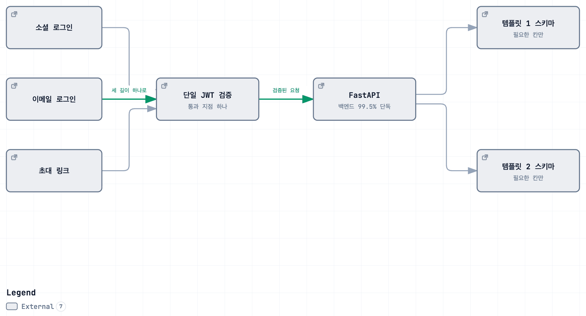

아티스트 홍보 웹사이트
아티스트마다 보여줄 것이 다른 프로필 사이트
Impact
- 99.5%2인 팀 백엔드 5,519줄 중 5,493줄 직접 작성
- 27개운영 DB에만 있고 모델에 없던 FK CASCADE 드리프트를 규명
- 86리팩터 결과를 고정하는 pytest
Background
음악 아티스트는 자기 작업을 모아 보여줄 곳이 없습니다. 인스타그램은 흐르고, 사운드클라우드는 음원만 담고, 웹사이트는 만들 줄 모릅니다. 2인 팀으로 만들어 실사용자를 받아 운영했고 백엔드를 전담했습니다. 지금은 구조를 다시 잡는 중이라 도메인이 내려가 있습니다.
까다로운 지점은 아티스트마다 보여줄 것이 다르다는 것이었습니다. 세션 연주자는 참여 앨범 이력이, 미디어아트 작가는 전시 사진이 본체입니다.

Architecture

템플릿 1과 2가 각자의 정규화된 테이블로 갈리고, 그 위의 계정·인증만 하나로 모읍니다. 직업 분류는 2단 카테고리에 다대다로 두어 직업이 늘어도 행만 추가하면 됩니다.
Contributions
가장 고민한 것 — JSON 한 칸이냐, 템플릿별 스키마냐
콘텐츠 구조가 가변적이니 JSON 컬럼 하나에 담는 쪽이 가장 간단했습니다. 그러면 장르별·직업별 검색을 붙일 수 없고 템플릿을 바꿀 때 데이터를 옮길 경로가 없습니다. 간단한 쪽이 아니라 나중에 되돌릴 수 있는 쪽을 골랐습니다.
진입 경로 셋을 토큰 하나로 수렴시켰다
로컬 가입 · Google OAuth · 이메일 OTP로 들어오는 길이 셋이었습니다. 진입만 셋으로 두고 이후 요청은 전부 하나의 JWT로 처리해, 인증 확인 코드가 경로마다 갈라지지 않게 했습니다.
템플릿 중복을 서비스 계층으로 걷어냈다
profile.py 898줄 중 약 600줄이 템플릿 1과 2의 같은 코드였습니다. 공통 처리를 레지스트리로 묶어 서비스 계층으로 옮기고 라우터를 271줄로 줄였습니다. 옮긴 코드가 새 파일로 들어갔으니 전체가 3분의 1이 된 것은 아닙니다 — 같은 코드가 두 군데 있는 상태를 없앤 것입니다.
Troubleshooting
빈 데이터베이스에 붙이면 기동조차 되지 않았다
- 문제
- 서버가 뜰 때마다 테이블 변경과 외래키 재생성이 실행되는 구조라 변경 이력도 롤백 수단도 없었고, 모델 정의와 실제 스키마가 어긋나 있었습니다.
- 원인
- 그 하나뿐인 운영 데이터베이스만 우연히 동작하고 있었습니다.
- 해결
- 마이그레이션 자동 생성을 그냥 돌리면 외래키를 전부 삭제하는 결과가 나옵니다. 운영 스키마를 먼저 뽑아 모델과 대조하고 차이를 하나씩 판정한 다음 이력을 시작했습니다.
- 결과
- 그 과정에서
ON DELETE CASCADE27개가 운영에만 있다는 것을 찾았습니다. 그대로 새 환경을 만들었으면 사용자 삭제가 외래키 위반으로 죽었을 것입니다.
중복이 버그를 낳고 있었다
- 문제
- 템플릿 2만 쓰는 아티스트가 카테고리 목록에 영영 노출되지 않았습니다.
- 원인
- 공개 목록 조회가 템플릿 1 테이블만 보고 있었습니다. 같은 성격의 검색 API는 둘 다 보고 있어서 어느 쪽이 맞는지가 코드 안에서 갈려 있었습니다.
- 해결
- 템플릿 중복을 통합하면서 조회 경로도 하나로 합쳤습니다.
- 결과
- 중복을 줄이려고 시작한 작업에서 실제 버그가 함께 해결됐습니다. pytest 86개로 회귀를 막았습니다.